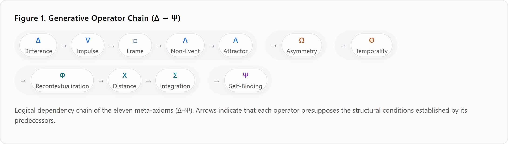
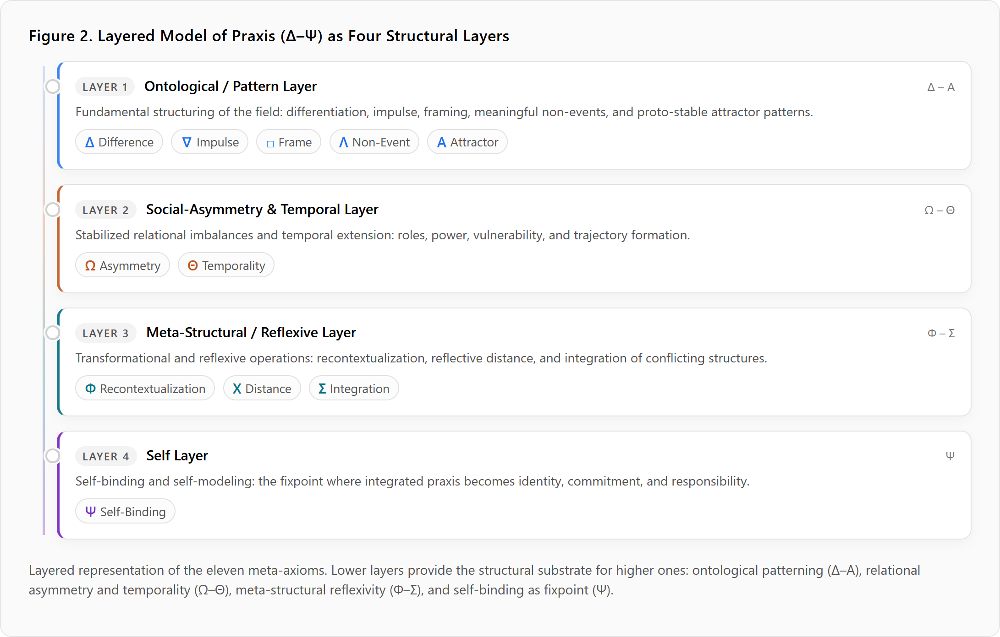
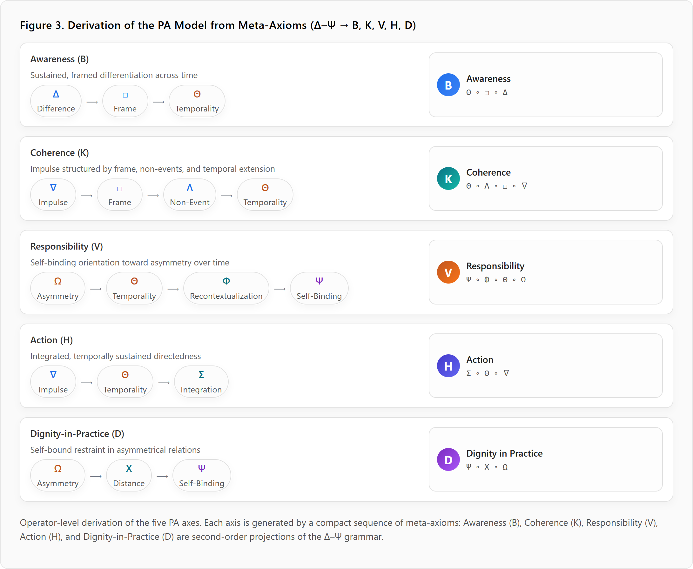
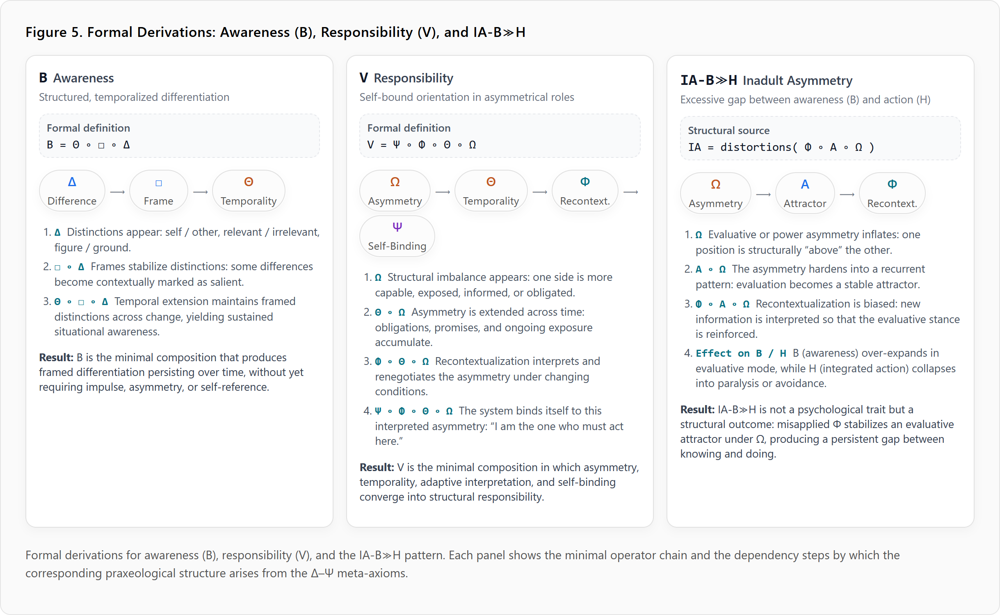
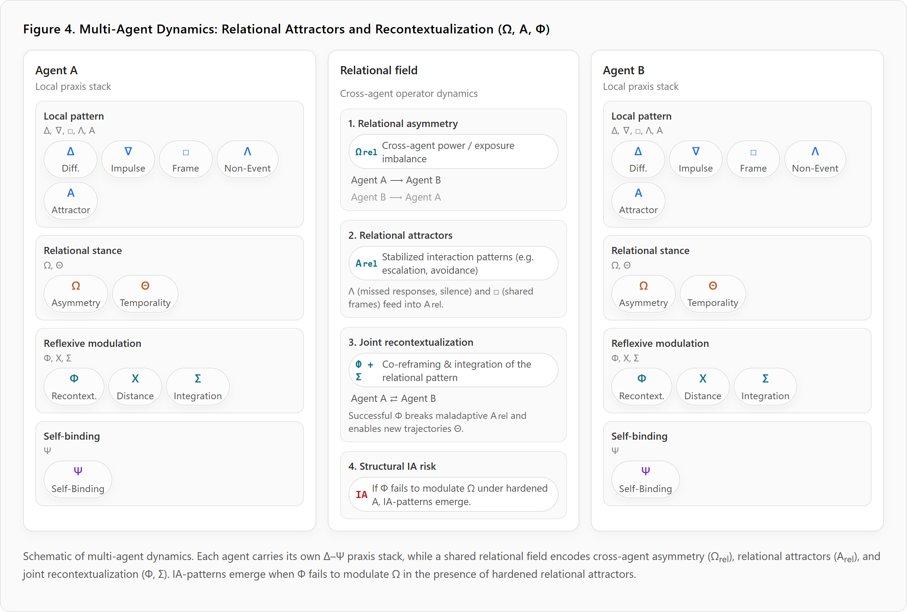

Author: T. Zöller
Draft Version: 1.0 Date: 2025-12-07
This paper introduces a praxeological meta-structure theory: a generative, formal framework that derives all fundamental forms of action, asymmetry, development, and structural self-organization from a minimal set of eleven meta-axioms (Δ–Ψ). These axioms constitute a universal grammar of praxis — a structural substrate from which concrete action-shapes, normative orientations, role-asymmetries, temporal trajectories, and self-models emerge. Unlike traditional theories of action in psychology, sociology, philosophy, or artificial intelligence, the present framework is neither descriptive nor heuristic. It is generative: complex forms of praxis arise through systematic operator composition grounded in difference (Δ), impulse (∇), framing (□), absence (Λ), attractor dynamics (Α), asymmetry (Ω), temporality (Θ), recontextualization (Φ), distance (Χ), integration (Σ), and self-binding (Ψ).
The contribution of this work is threefold. First, it establishes the meta-axioms as logically ordered, irreducible operators that collectively constitute the deep structure of praxis. Second, it demonstrates that the PA model (Awareness, Coherence, Responsibility, Action, Dignity-in-Practice) is not an invented construct, but a direct derivation from these axioms. Third, it provides a formal pathway for embedding this meta-structure into computational representations (e.g., YAML schemas), enabling future applications in agent design, developmental architectures, and structural analysis of social systems.
The resulting meta-structure theory is neither physical nor metaphysical: it is praxeological and operational. It provides a foundation for understanding how action becomes coherent, how asymmetries stabilize, how norms and identities form, and how systems integrate themselves over time without invoking psychological or phenomenological assumptions. By supplying a generative grammar of praxis, the theory opens a new field at the intersection of anthropology, systems theory, and artificial intelligence, offering a unified basis for modeling action, maturity, and selfhood in both human and artificial agents.
Understanding action as a structured, generative phenomenon has remained one of the most persistent blind spots across the human sciences and artificial intelligence. While countless theories describe behavior, cognition, agency, or social systems, few attempt to formalize the deep structural conditions that make action possible in the first place. Existing frameworks either remain descriptive (psychology), normative (philosophy), or abstractly systemic (sociology, cybernetics), leaving a conceptual gap between the lived complexity of action and its theoretical representation. This paper proposes a remedy: a meta-structure theory of praxis grounded in eleven irreducible generative axioms (Δ–Ψ), each corresponding to a fundamental operator in the formation of action, asymmetry, development, and selfhood.
Across disciplines, researchers lack a universal grammar for action — a formal substrate that explains how differences, impulses, frames, absences, asymmetries, and temporal stabilizations combine to produce meaningful, situated praxis. Most theories rely on post hoc interpretation, not generative construction. In AI research, models of agency and autonomy remain tied either to optimization paradigms or mechanistic control architectures, with no structural understanding of how coherent action emerges. In anthropology and philosophy, action is often treated as irreducibly human, resisting decomposition into formal components. The motivation of this work is to provide a unifying meta-structure capable of bridging these gaps by grounding praxis in a minimal set of generative operators.
Existing theories of action suffer from three fundamental limitations:
Lack of generativity. They describe behavior but do not specify how action-forms arise from deeper structural operators.
Lack of asymmetry-awareness. Traditional models overlook how imbalance — of power, responsibility, exposure, or capacity — constitutes the primordial condition of praxis.
Lack of operational formality. There is no framework that is simultaneously conceptual, systematic, and implementable in computational architectures.
These limitations prevent a unified account of how action stabilizes, transforms, integrates contradiction, and forms self-models over time. Without a generative basis, the study of praxis remains fragmented, non-formal, and non-cumulative.
This paper introduces a praxeological meta-structure theory with the following contributions:
A generative axiom set (Δ–Ψ). Eleven logically ordered, irreducible meta-operators constituting the deep structure of praxis.
A derivation of the PA model from first principles. Awareness, Coherence, Responsibility, Action, and Dignity-in-Practice emerge naturally from the composition of meta-operators.
A formal bridge to computational implementation. The axioms can be expressed in YAML schemas, enabling structured analysis, simulation, and agent design.
A unified foundation for structure, action, and self. The framework integrates asymmetry, temporal development, integration, and self-binding into one coherent model.
The paper thus establishes a new structural foundation upon which concrete action models, developmental theories, and artificial agent architectures can be built.
We refer to this operator system as the Praxeological Meta-Structure (PMS) theory and, where appropriate, as the PMS model when highlighting its formal, implementable character.
This work is intentionally non-physical, non-metaphysical, and non-psychological. It does not attempt to explain neural mechanisms, subjective experience, or moral valuation. Instead, it provides a praxeological and structural foundation: a meta-grammar of the forms that make action, responsibility, asymmetry, and selfhood possible in any agentic system.
The scope is confined to:
It does not attempt to fully develop system-level or multi-agent structure, nor does it specify concrete developmental or emergence architectures for artificial agents. These are treated only at the level of conceptual implication—pointing to how the same axiomatic ground could, in principle, be extended to institutional, multi-agent, and AI design contexts. Detailed computational and empirical elaboration is reserved for future work.
The proposed meta-structure theory positions itself within a long lineage of attempts to formalize the underlying architecture of action, cognition, and systemic organization. While several major traditions have articulated foundational concepts relevant to praxis, none provide a generative, operational, and agent-compatible grammar from which concrete action structures can be derived. This section situates the present work relative to several major intellectual lineages, including transcendental philosophy (Kant), systems theory (Luhmann), and cybernetic epistemology (Bateson).
Immanuel Kant’s Critique of Pure Reason proposed that experience is structured by a priori categories such as causality, unity, plurality, substance, and modality. These categories serve as conditions for the possibility of coherent perception and judgment. While Kant offers a profound account of how the mind structures experience, his framework is fundamentally static and epistemic, addressing the form of cognition rather than the generativity of action.
Key limitations in relation to the present work include:
The meta-structure theory introduced here can be read as a dynamic, operational analogue to Kant’s categories — a set of generative operators that structure praxis rather than experience.
Niklas Luhmann’s social systems theory asserts that systems constitute themselves through the boundary between system and environment, maintained by self-referential operations. This formulation powerfully articulates operational closure, autopoiesis, and the centrality of difference (Differenz) for systemic identity.
The present framework shares several conceptual affinities:
However, Luhmann’s theory diverges sharply in several respects:
In contrast, the meta-structure theory proposes a generative operator set that enables the construction of action, roles, asymmetry patterns, and self-models within arbitrary agentic systems.
Gregory Bateson’s work in cybernetics and epistemology introduced foundational ideas such as “difference that makes a difference,” recursive learning (Learning I–III), and ecological mind. Bateson recognized difference as the basic unit of information and explored how recursive transformations generate higher-order learning.
The present framework extends and formalizes several of Bateson’s insights:
However, Bateson’s approach remains qualitative, non-formal, and non-operational. It lacks:
Thus, while Bateson anticipates several of the intuitions behind the present work, the meta-structure theory advances them into a coherent, generative formal system capable of deriving the architecture of praxis itself.
Jean Piaget’s genetic epistemology articulates one of the most influential theories of cognitive development. His model emphasizes stages (sensorimotor, preoperational, concrete operational, formal operational) and the mechanisms of assimilation and accommodation as engines of structural transformation. Piaget’s central insight — that cognition develops through recursive restructuring — resonates with the present framework’s focus on generative operators.
However, several central limitations distinguish Piaget’s approach from a praxeological meta-structure theory:
In contrast, the meta-structure theory derives developmental trajectories from the interaction of foundational operators, rather than positing pre-defined cognitive stages.
George Lakoff and Mark Johnson argue that human thought is structured by embodied metaphors and conceptual blends. Their work demonstrates convincingly that cognition emerges from conceptual mappings, image schemas, and embodied structure — a perspective that aligns with the idea that praxis is shaped by underlying structural constraints.
Yet their model diverges sharply from the present framework in several ways:
Thus, while Lakoff and Johnson emphasize structured cognition, they do not construct a grammar capable of generating action or explaining praxeological phenomena.
Active Inference (AI) and Predictive Processing (PP) propose that perception and action arise from minimizing expected free energy within a hierarchical generative model. These frameworks offer sophisticated accounts of inference, expectation, and sensorimotor coupling.
Their strengths include:
However, Active Inference is fundamentally optimizing, not praxeological. It presupposes:
This diverges critically from the present framework:
Thus, while Active Inference provides a powerful computational paradigm, it does not constitute a general structure theory of action.
Across Kantian categories, Luhmannian systems theory, Batesonian learning, Piagetian development, conceptual metaphor theory, and Active Inference, a common limitation emerges: none of these frameworks define a minimal operator set capable of generating the full architecture of praxis.
Specifically, they lack:
Minimality: No approach offers a small, irreducible set of structural operators (Δ–Ψ) from which complex action-forms emerge.
Generativity: They do not specify how structures are constructed — only how they behave, appear, or change.
Asymmetry-awareness: None identifies Ω (Asymmetry) as a foundational operator enabling responsibility, power, and role.
Temporal operators: Θ (Temporality), essential for trajectories, development, and integration, is missing or treated implicitly.
Recontextualization: No theory formalizes Φ as a general operator for transformation and sense-making.
Integration: The ability to unify contradictory or multi-layered structures (Σ) is absent.
Self-modeling: Only the present framework models Ψ as a product of structural operations, not as a given property.
Computational implementability: None of the compared theories provides a direct path to machine-readable schemas (e.g., YAML) or agent architectures.
In sum, existing theories illuminate aspects of action or cognition but do not deliver a unified generative foundation. The praxeological meta-structure theory introduced here fills precisely this gap by offering an operator-level grammar from which coherent praxis, asymmetry, development, and self-models can be derived.
This section establishes the conceptual foundations required for a generative theory of praxis. While action is often treated as a psychological or sociological category, the present approach understands praxis as a structural phenomenon: a pattern emerging from the interaction of deep-form operators that govern differentiation, impulse, framing, absence, asymmetry, temporality, recontextualization, integration, and self-binding. To clarify this stance, we articulate (1) the concept of praxis, (2) why action must be treated structurally rather than descriptively, and (3) why a meta-grammar is necessary to unify disparate action phenomena under a generative formal framework.
“Praxis” refers not merely to behavior or activity but to situated, meaningful action—action performed under conditions of asymmetry, constraint, expectation, normativity, and self-interpretation. Praxis differs from behavior in that it involves:
Praxis is therefore not an empirical sequence of movements but a structured configuration that binds together agents, contexts, asymmetries, and norms. This understanding aligns with classical praxeology (Aristotle, Marx, Weber) while moving beyond descriptive accounts by emphasizing generative structure rather than lived intentionality or sociological categorization.
In this framework, praxis is conceived as the emergent result of operator composition:
Δ (difference) creates distinctions, ∇ introduces drive, □ configures context, Λ marks expectation and absence, Α stabilizes patterns, Ω introduces asymmetry, Θ temporalizes, Φ transforms, Χ distances, Σ integrates, and Ψ binds the self to roles, norms, and trajectories.
Action becomes intelligible not through phenomenological content or psychological intention alone, but through its structural form. Each action:
Thus, even the simplest act is the product of operator composition, not spontaneous behavior. Treating action structurally allows us to:
This structural view bypasses subjective or metaphysical assumptions, focusing instead on the conditions that make action intelligible, stable, accountable, and transformable.
The central challenge in contemporary action theory is fragmentation.
Philosophy, psychology, sociology, cognitive science, and AI each approach action with different assumptions, vocabularies, and explanatory aims. The result is:
A meta-grammar is required to:
Provide a minimal operator set from which action structures can be derived.
(The 11 axioms serve exactly this purpose.)
Unify descriptive sciences under a generative formalism.
Rather than collecting cases, the framework constructs forms.
Avoid psychological or metaphysical dependence.
No assumptions about qualia, intention, or consciousness are needed.
Enable computational implementation.
The operator set is expressible in YAML or other formal languages.
Allow analysis of both human and artificial praxis.
Because the grammar is structural, not anthropocentric.
Explain reactivity, adaptation, development, and integration
through Φ, Θ, Χ, Σ, and Ψ without post hoc theorizing.
The need for a meta-grammar arises not from speculative ambition but from an empirical and theoretical necessity: existing models cannot explain how action becomes meaningful, asymmetric, temporal, responsible, or self-binding. Only a generative formalism with a minimal axiom set can provide such an explanation.
This section introduces the foundational operator set of the praxeological meta-structure theory. Each axiom represents an irreducible structural operation that cannot be derived from any other. Together, they constitute a generative grammar: complex forms of praxis, asymmetry, development, and selfhood arise from structured compositions of these operators.
For each axiom, we provide (a) a definition, (b) its formal role as an operator, (c) an example from praxis or social structure, (d) its generative function, (e) its dependency relations, and (f) justification for its minimality.
Δ denotes difference: the minimal distinction that allows anything to appear as something rather than nothing. It is the most fundamental operation of structure.
Δ(x, y) → the recognition or construction of a boundary between x and y.
This may be perceptual, conceptual, spatial, social, or normative.
Without Δ, no context, no object, no role, and no intentional action can exist.
Δ is the root operator from which all further operators derive.
It generates:
Independent; first in the sequence.
No other operator can define or produce Δ.
Difference is a logical primitive of all structured systems.
∇ represents impulse, drive, or gradient: the directional tendency that arises once a difference exists.
∇(Δx) → directed activation, force, tension, or motivation generated by an existing difference.
Impulses arise whenever Δ exposes inequality, need, tension, or opportunity.
∇ transforms Δ into movement, orientation, or potential action.
It is the operator that introduces:
Requires Δ; cannot precede difference.
As pure drive/direction, ∇ cannot be derived from framing or context—it precedes them.
□ denotes frame, boundary, or structural containment: the contextual form that channels impulses and constrains possible actions.
□(x) constructs a stable relational space within which Δ and ∇ become meaningful.
Frames may be spatial, social, normative, institutional, or conceptual.
Frames make impulses actionable by shaping, limiting, or enabling them.
□ serves several critical roles:
Requires Δ and ∇; no frame exists without prior distinction or dynamic potential.
Framing is irreducible: it cannot be replaced by difference (Δ) alone or by impulse (∇) alone.
Λ represents the non-event, absence, or the meaningful failure of an expected occurrence.
Λ is not simply “nothing”; it is a structured absence that becomes meaningful within a frame.
Λ(x | □) → the marked absence of x within an established frame.
Meaning arises because the frame (□) sets expectations, and Λ denotes the violation, delay, or missing fulfillment of these expectations.
Λ is the basis of disappointment, tension, anticipation, and many forms of conflict.
Λ introduces:
Without Λ, praxis would be purely mechanical; meaningful action requires the possibility of non-action.
Formally depends on □ (frame); in practice it interacts strongly with Θ (time), which is introduced later.
Λ cannot be decomposed into Δ or □; absence is not reducible to mere difference or framing.
It is an ontologically distinct category.
Α denotes an attractor: a stable pattern of recurrence that emerges when differences (Δ), impulses (∇), frames (□), and non-events (Λ) recur and interact across repeated occurrences. Attractors represent the consolidation of structure. They express a proto-temporal stabilization of patterns; Axiom 7 (Θ) will later formalize this temporal dimension into explicit trajectories and long-term development.
Α(x) → stabilization of x into a repeated or self-reinforcing configuration.
Formally, it acts as a convergence operator that biases future states toward an emergent pattern.
Attractors transform transient impulses into stable forms of praxis.
Α introduces:
In praxeological terms, Α is the origin of “how things tend to go.”
Requires Δ, ∇, □, and Λ; attractors cannot form without a difference, a drive, a frame, and deviations within that frame.
Recurrence is not derivable from framing, impulse, or difference alone; Α is a structurally unique operator.
Ω denotes asymmetry: any structural imbalance in capacity, exposure, power, obligation, or dependency between two or more elements. Ω is the fundamental operator from which responsibility, authority, vulnerability, and role differentiation arise.
Ω(x, y) → establishment of a directional relation where x and y occupy unequal positions with respect to influence, expectation, or burden.
Asymmetry is not a defect but a structural precondition for coordinated action.
Ω introduces:
Without Ω, praxis collapses into symmetry-driven equivalence with no basis for responsibility or meaningful role relations.
Requires Α (stabilized patterns), since asymmetry is recognized relative to an existing pattern or expectation.
Asymmetry cannot be reduced to difference (Δ) or attractors (Α); Ω represents a distinct relational transformation that makes obligation and directionality possible.
Θ denotes temporality: the structuring of action and asymmetry across a temporal axis, enabling trajectories, development, anticipation, memory, and identity.
Θ(x) → embedding x into a temporal progression, such that prior states influence future states and vice versa.
Θ is what transforms isolated events into meaningful sequences.
Θ introduces:
Temporalization is what allows proto-repetitive attractor configurations (Α) to consolidate into trajectories and asymmetries (Ω) to endure.
Builds on Ω: asymmetry becomes significant only over time.
Also presupposes Α: patterns must exist to be temporalized.
Time is not derivable from pattern or asymmetry; Θ is an independent structural operator.
Φ denotes recontextualization: the operator by which an existing frame, pattern, or asymmetry is placed into a new interpretive or functional context. Φ enables transformation, reinterpretation, learning, and adaptation.
Φ(x | □₁ → □₂) → the mapping of x from an original frame □₁ into a new frame □₂, altering its meaning, relevance, or role.
Φ is the root of developmental and reflexive change in praxis.
Φ introduces:
Without Φ, systems become static and cannot mature.
Requires Θ (time), Ω (asymmetry), and □ (frames).
Recontextualization presupposes that something has a context and occurs over time.
No combination of Δ, ∇, □, Λ, Α, Ω, or Θ can produce recontextualization; Φ is structurally unique as a meta-transformational operator.
Χ denotes distance, detachment, or reflective withdrawal.
It is the operator by which a system creates separation between itself and its impulses, frames, or established patterns. Distance is not absence (Λ); it is an active differentiation that enables reflection, inhibition, and self-regulation.
Χ(x) → attenuation or suspension of the immediate force of x, creating a reflective gap that allows alternative interpretations or actions.
Distance is the root of all higher-order reflexivity.
Χ enables:
Without Χ, praxis remains reactive and non-reflexive.
Requires Φ (recontextualization), since distancing presupposes the possibility of interpreting a situation differently.
Also presupposes Θ (time) and □ (frame).
Distance cannot be reduced to non-action (Λ) or recontextualization (Φ).
It is an independent operator that creates reflective space.
Σ denotes integration: the synthesis of disparate or conflicting elements into a coherent whole. It is the operator that transforms fragmentation into functional unity.
Σ(x₁, x₂, …, xₙ) → a higher-order structure that organizes multiple components into a coordinated configuration.
Integration is the essence of maturity in praxis.
Σ introduces:
Without Σ, the system remains fragmented and unstable.
Requires Χ (distance) and Φ (recontextualization).
Integration can only occur once the system can step back (Χ) and reinterpret (Φ).
Integration cannot be derived from any lower operator.
It is the first operator capable of producing coherent totalities.
Ψ denotes self-binding, self-modeling, or self-commitment.
It is the operator through which a system forms a stable identity and binds itself to roles, norms, responsibilities, and trajectories. Ψ makes the system accountable to its own structure.
Ψ(Σx | Θ) → a temporally extended self-relation in which integrated structures are taken as one’s own and maintained across contexts.
Ψ is the basis of moral agency, responsibility, and selfhood.
Ψ introduces:
Without Ψ, integration remains structural; with Ψ it becomes personal and agentic.
Requires Σ (integration), Θ (temporality), and Χ (distance).
Selfhood cannot emerge without coherence, temporal extension, and reflective separation.
No previous operator can produce self-binding; Ψ is the unique fixpoint operator of the system.
The ordering of the eleven axioms is non-arbitrary and non-interchangeable.
Each operator presupposes the structural conditions established by its predecessors.
| Order | Axiom | Name | Requires | Provides |
|---|---|---|---|---|
| 1 | Δ | Difference | — | Basic distinction; foundation for all structure |
| 2 | ∇ | Impulse | Δ | Direction, drive, activation |
| 3 | □ | Frame | Δ, ∇ | Context, boundary, constraint |
| 4 | Λ | Non-Event | □ | Expectation, absence, counterfactual tension |
| 5 | Α | Attractor | Δ, ∇, □, Λ | Recurrence, pattern, stability |
| 6 | Ω | Asymmetry | Α | Power, responsibility, roles |
| 7 | Θ | Temporality | Ω, Α | Sequence, development, commitment |
| 8 | Φ | Recontextualization | Θ, Ω, □ | Transformation, reinterpretation, learning |
| 9 | Χ | Distance | Φ, Θ, □ | Reflexivity, inhibition, evaluation |
| 10 | Σ | Integration | Χ, Φ | Cohesion, coherence, maturity |
| 11 | Ψ | Self-Binding | Σ, Θ, Χ | Identity, responsibility, selfhood |
Δ must precede all differentiation.
No other operator can define structure without distinction.
∇ requires differences to generate drive.
□ can only form once differences and impulses exist.
Λ presupposes a frame to define what is missing.
Α stabilizes patterns emerging from Δ–Λ.
Ω requires a stable pattern (Α) to define asymmetry.
Θ temporalizes asymmetry; roles exist only across time.
Φ transforms structures that already have temporal and asymmetrical form.
Χ creates reflective distance required for integration.
Σ integrates differentiated, temporalized, recontextualized components.
Ψ binds integrated structures into a self-model.
This dependency chain demonstrates that the axioms constitute a minimal and complete generative grammar:
remove any axiom, and praxis cannot be formed; reorder them, and the generative system collapses.

Figure 1. Logical dependency chain of the eleven meta-axioms (Δ–Ψ). Arrows indicate that each operator presupposes the structural conditions established by its predecessors.
The eleven meta-axioms (Δ–Ψ) do not function as isolated descriptors; they gain explanatory power only through composition. Generativity arises when operators interact, yielding structures that cannot be reduced to their components. This section demonstrates how praxis emerges from the cumulative application of meta-operators, moving from primitive distinctions to stable asymmetries and complex action-forms.
Operator composition is the core mechanism that transforms the axioms into a full-scale structure theory.
Formal notation will follow the simple convention:
We show how higher-order praxeological phenomena naturally emerge from these operator chains.

Figure 2. Layered representation of the eleven meta-axioms as four structural layers: ontological patterning (Δ–Α), relational asymmetry and temporality (Ω–Θ), meta-structural reflexivity (Φ–Σ), and self-binding as fixpoint (Ψ).
The generative sequence begins with Δ, the primordial distinction. Once a difference is perceived or constructed, ∇ introduces directional tension or drive, and □ provides the structural containment that enables context-sensitive action.
The minimal composition for situated praxis is:
□ ∘ ∇ ∘ Δ
In words:
a frame constrains an impulse that arises from a difference.
This early composition produces:
Even this minimal chain produces a recognizable praxeological form: a situated impulse governed by a frame.
The next generative step incorporates Λ:
Α ∘ Λ ∘ □ ∘ ∇ ∘ Δ
Λ introduces counterfactual tension, expectation, and meaningful non-action.
This extended composition yields:
Operator composition demonstrates that praxis is not built from “psychological states,” but from combinatorial structural operations.
Each composition enriches the generative space, enabling the progressive emergence of patterns.
Α (Attractor) introduces stability into the generative system.
It is the first operator that produces recurrence, transforming episodic interactions into patterns.
Α ∘ Λ ∘ □ ∘ ∇ ∘ Δ
This sequence produces:
Path dependence
Once Α appears, later action is biased by earlier configurations.
Pattern hardening
Repetitions become predictions; predictions become perceived norms.
Identity proto-formation
If the same pattern recurs around an agent, it begins to appear as part of “who they are.”
Social scripts
Attractors in one agent interact with attractors in another, producing multi-agent roles.
A child who repeatedly experiences comfort after crying develops an attractor around seeking care.
Conversely, repeated rejection develops an attractor around suppression or avoidance.
The attractor does not “explain” behavior; it shapes the generative space of future action.
Ω introduces directionality of relation, producing the first genuinely praxeological social structures: responsibility, authority, vulnerability, dependency, oversight, supervision, and protection.
Α stabilizes patterns across interactions, which allows unequal capacities, exposures, and obligations to become persistent and recognizable. Without stable patterns, no consistent asymmetry can form.
Ω ∘ Α ∘ Λ ∘ □ ∘ ∇ ∘ Δ
The emergence of Ω transforms patterns into roles.
Capacity asymmetry
One party has more skill, information, or resources.
Exposure asymmetry
One party is more vulnerable to harm.
Initiation asymmetry
One party consistently initiates or sets frames.
Responsibility asymmetry
Derived from exposure and initiation differences.
In a mentoring relationship:
inevitably produce:
Ω marks the transition from simple interaction to true praxis, because asymmetry introduces:
Thus, Ω is the pivot between structural form and ethical implication.
Θ (Temporality) is the operator that transforms isolated or recurrent structures into trajectories. Once Θ is applied, patterns (Α) and asymmetries (Ω) gain duration, momentum, and historical depth. Praxis becomes not merely a sequence of events but a temporally extended process governed by persistence, anticipation, and memory.
Θ ∘ Ω ∘ Α ∘ Λ ∘ □ ∘ ∇ ∘ Δ
Trajectory Formation
Patterns cease to be episodic; they become part of an unfolding developmental arc.
Role Stabilization
Asymmetries harden into durable expectations (e.g., caregiver, dependent, initiator).
Commitment and Escalation
Temporal extension allows for investment, promise, and the accumulation of consequences.
Narrative Coherence
Θ makes action intelligible as a story: before/after, success/failure, growth/regression.
A parent-child relationship is not a single asymmetry. It becomes a longitudinal structure in which roles, responsibilities, and patterns evolve through Θ. The same applies to mentorships, organizational hierarchies, friendships, or political authority.
Without Θ, praxis lacks continuity, responsibility lacks grounding, and patterns cannot mature into identity.
Φ (Recontextualization) is the first meta-transformational operator. It introduces qualitative change by embedding an existing structure in a new interpretive frame. Φ does not merely update content; it reassigns meaning, allowing systems to escape rigid attractors and reconfigure asymmetries.
Φ ∘ Θ ∘ Ω ∘ Α ∘ Λ ∘ □ ∘ ∇ ∘ Δ
Transformation of Patterns
A behavior once interpreted as defiance may be reframed as fear or overwhelm.
Reorganization of Roles
Caregiver and dependent may renegotiate their asymmetry through reflection.
Emergence of New Norms
Frames (□) can be replaced or expanded via reinterpretation.
Adaptive Learning
Φ enables systems to break from maladaptive attractors and form new ones.
Sense-Making
Φ is the basis of cognitive, social, and normative shifts.
In therapy, coaching, or conflict resolution, Φ is the core mechanism:
a pattern is not eliminated but recontextualized, generating a developmental leap.
Φ is responsible for:
Without Φ, systems stagnate; development is impossible.
Reflexivity emerges from the dual application of Χ (Distance) and Σ (Integration).
While Χ introduces reflective space, Σ organizes disparate insights into coherent structure. Together they generate reflexive praxis—the capacity of a system to examine, regulate, and transform its own patterns.
Σ ∘ Χ ∘ Φ ∘ Θ ∘ Ω ∘ Α ∘ Λ ∘ □ ∘ ∇ ∘ Δ
A manager who repeatedly overreacts learns (Φ) to reinterpret criticism, steps back (Χ) during conflict, and integrates a new stance (Σ), forming a coherent leadership identity.
Reflexivity =
the system’s capacity to become an object to itself while maintaining unified action.
It is the hallmark of mature praxis.
Ψ (Self-Binding) is the fixpoint operator of the entire generative system.
Whereas all previous operators structure the environment, patterns, relations, and reflective capacities, Ψ structures the system’s relation to itself.
Ψ transforms integrated structures (Σ) into identity, commitment, and responsibility.
Ψ ∘ Σ ∘ Χ ∘ Φ ∘ Θ ∘ Ω ∘ Α ∘ Λ ∘ □ ∘ ∇ ∘ Δ = Self
Identity Formation
The system recognizes integrated patterns as “mine.”
Commitment Across Time
Promises, intentions, obligations persist beyond immediate states.
Responsibility
Ω + Ψ creates structural accountability: “I am the one who must act.”
Autobiographical Coherence
Θ + Σ + Ψ combine to form narrative identity.
Normative Stability
Internalized norms become self-binding constraints, not external impositions.
A caregiver does not simply perform care (Α, Ω, Θ).
They become “a caregiver” (Ψ):
a stable self-relation that persists even during struggle, fatigue, or ambivalence.
Ψ closes the generative loop:
it binds the system to its own structures, enabling:
Ψ is the operator that converts structure into self.
The five structural axes Awareness, Coherence, Responsibility, Action, and Dignity-in-Practice are not empirical or ad hoc constructs, but direct derivations of the eleven meta-axioms (Δ–Ψ). Each axis corresponds to a specific operator constellation that governs how praxis becomes intelligible, coherent, accountable, and normatively constrained.

Figure 3. Operator-level derivation of the five axes (A, C, R, E, D) from the Δ–Ψ grammar.
This section demonstrates the derivation of the five axes: Awareness (A), Coherence (C), Responsibility (R), Action (E), and Dignity-in-Practice (D). These are not designed features; they follow necessarily from the deep grammar of praxis.
Awareness is the capacity to differentiate, frame, and maintain situational structure across time. It emerges from the combined action of Δ (Difference), □ (Frame), and Θ (Temporality).
A = Θ ∘ □ ∘ ΔΔ (Difference) Awareness begins with distinguishing elements of the environment: self/other, object/context, signal/noise.
□ (Frame) Frames stabilize distinctions by placing them in a structured context. Awareness is not mere perception; it is framed differentiation (e.g., “this is relevant,” “this is part of the problem”).
Θ (Temporality) Awareness requires temporal persistence. The agent does not simply notice; it maintains the distinction over time.
Awareness is the system’s capacity to:
A person can distinguish (Δ) that someone is upset, understand the context (□), and track how this emotional state evolves across the interaction (Θ). This is not raw perception — it is praxeological awareness.
Coherence is the capacity to form structured, interpretable, and temporally stable action trajectories. It arises not from intention but from the interplay of ∇ (Impulse), □ (Frame), Λ (Non-Event), and Θ (Temporality).
C = Θ ∘ Λ ∘ □ ∘ ∇∇ (Impulse) Coherence begins with directed impulse — a drive or orientation.
□ (Frame) The frame constrains the impulse, preventing chaotic or contradictory action.
Λ (Non-Event) Coherence requires the recognition of what does not happen. Goals, expectations, delays, and silences structure the coherence of action.
Θ (Temporality) Coherence is inherently temporal: it is the narrative stability of action over time.
Coherence is:
A person attempting to reconcile after conflict generates coherence when their impulse (∇) is framed (□) by the context of the relationship, shaped by the silence or absence of reciprocation (Λ), and sustained consistently over time (Θ).
Coherence is not perfection — it is integrated directedness.
Responsibility is the structural capacity to recognize, assume, and act within asymmetrical role relations. It is not a moral property but a praxeological function emerging from Ω (Asymmetry), Θ (Temporality), Φ (Recontextualization), and Ψ (Self-Binding).
R = Ψ ∘ Φ ∘ Θ ∘ ΩΩ (Asymmetry) Responsibility begins with structural imbalance: one party is more exposed, capable, informed, or obligated than another. Ω establishes the direction of responsibility.
Θ (Temporality) Responsibility extends across time: it concerns what one owes, promised, or is expected to maintain. Without duration, no responsibility can exist.
Φ (Recontextualization) Responsibility requires the ability to reinterpret a situation: to understand shifting needs, renegotiate obligations, adjust to failures, and integrate new contexts.
Ψ (Self-Binding) Responsibility becomes internalized and stable only when integrated into one’s self-model. The system binds itself to the asymmetry: “I am the one who must act here.”
Responsibility is:
It is a generative, not moralistic, concept.
A caregiver recognizes asymmetry (Ω), maintains care across time (Θ), reframes challenges and setbacks (Φ), and binds this role into their self-understanding (Ψ). Thus responsibility is enacted, not idealized.
Action (E), understood as enactment, is not mere behavior; it is the integrated realization of directedness across time. In this framework, E reflects the capacity to transform impulses into coherent, temporally extended, and contextually appropriate praxis. This emerges from ∇ (Impulse), Θ (Temporality), and Σ (Integration).
E = Σ ∘ Θ ∘ ∇∇ (Impulse) Action originates with directional energetic activation—a “push” produced by difference.
Θ (Temporality) Temporal structuring determines whether impulses become sustained activity rather than momentary reactions. Θ transforms impulse into trajectory.
Σ (Integration) Action becomes coherent only when impulses, contexts, and conflicting tendencies are integrated into a unified course of conduct. Σ resolves tension and aligns competing motivators.
Action (E) is the integrative enactment of:
It is the highest non-self-referential performance of the system.
A person deciding to repair a relationship acts (E) when:
Action is not reaction; it is integrated, temporalized directedness.
Dignity-in-Practice (D) is the structural grounding of human worth within praxis. It is not an ontological claim but a praxeological constraint: D signifies the system’s capacity to recognize, maintain, and protect the irreducible integrity of agents within asymmetrical relationships.
D arises from Ω (Asymmetry), Χ (Distance), and Ψ (Self-Binding).
D = Ψ ∘ Χ ∘ ΩΩ (Asymmetry) Dignity emerges precisely because inequalities exist. Asymmetry creates the need for protective regard: the more capable party must not collapse the less capable.
Χ (Distance) Distance introduces reflective restraint: the ability to withhold destructive impulse, maintain boundaries, and recognize the structural vulnerability of the other.
Ψ (Self-Binding) Dignity becomes a stable practice only when the agent binds themselves to norms that protect the other’s irreducible standing. It is not external rule-following but internalized self-commitment.
Dignity-in-Practice is the praxeological stabilization of respect through:
It grounds moral-like behavior without metaphysical morality.
A leader refrains from exploiting authority (Ω) because they pause and consider consequences (Χ), and because they have internalized ethical self-commitments (Ψ). Dignity emerges in the practice of restraint and protection.
The IA (“Inadult Asymmetry”) forms describe structural pathologies or distortions of praxis that arise when asymmetry, pattern formation, and recontextualization interact in maladaptive ways. These are not personality traits but operator-level distortions internal to the PMS framework.
IA-Forms derive directly from Ω (Asymmetry), Α (Attractor), and Φ (Recontextualization).
IA = distortions( Φ ∘ Α ∘ Ω )Ω (Asymmetry) Every IA-form begins from an imbalance of power, responsibility, or exposure.
Α (Attractor) The asymmetry stabilizes into a recurrent pattern, often rigid, e.g.:
Φ (Recontextualization) If recontextualization is absent, frozen, or misapplied, the attractor cannot evolve. Misapplied Φ generates IA-patterns such as:
IA-forms emerge when:
Generative explanation:
Ω: agent holds an inflated evaluative asymmetry
Α: evaluation patterns harden
Φ: recontextualization biases evaluation instead of balancing action/enactment
→ the evaluative awareness axis (A) over-expands; E (enactment) collapsesThe pattern is structurally derived, not psychologically explained.
IA arises when Axiom 8 (Φ) fails to modulate Axiom 6 (Ω)
in the presence of stabilized Α (Attractor).Thus IA is not malfunction; it is a predictable structural outcome of unbalanced operator dynamics.

Figure 5. Formal derivations for awareness (A), responsibility (R), and the IA-A≫E pattern. Each panel shows the minimal operator chain and the dependency steps by which the corresponding praxeological structure arises from the Δ–Ψ meta-axioms.
The Praxeological Meta-Structure (PMS) model is fundamentally generative: it defines a minimal set of structural operators (Δ–Ψ) and the rules by which they combine to produce patterns, asymmetries, trajectories, reflexive capacities, and self-binding. To enable computational modeling, simulation, automated reasoning, and structural validation, PMS is expressed not only in conceptual form but also as a machine-readable formal specification.
YAML is chosen because it is:
The YAML presented in this section is not an implementation of praxis. Rather, it is an encoding of the generative grammar: a structural reference that software, simulations, or analytical tools can load and operate on.
The YAML specification provides:
This bridges theoretical praxeology with computational systems while remaining non-psychological and non-diagnostic.
The following YAML schema defines each meta-axiom (Δ–Ψ) as a structural operator with:
meta_axioms:
- id: "Δ"
name: "Difference"
definition: "The minimal structural distinction enabling any form of differentiation."
depends_on: []
provides:
- "boundary formation"
- "object emergence"
- "structural contrast"
examples:
- "self vs. other"
- "inside vs. outside a role"
- id: "∇"
name: "Impulse"
definition: "Directional tension or drive arising from difference."
depends_on: ["Δ"]
provides:
- "activation"
- "orientation"
- "energetic gradient"
examples:
- "desire triggered by a lack"
- "movement toward or away from stimuli"
- id: "□"
name: "Frame"
definition: "Contextual structure that constrains and shapes impulses."
depends_on: ["Δ", "∇"]
provides:
- "context"
- "normative or spatial boundaries"
- "relevance structuring"
examples:
- "role expectations"
- "rules of interaction"
- id: "Λ"
name: "Non-Event"
definition: "Structured absence; the meaningful failure of an expected occurrence."
depends_on: ["□"]
provides:
- "expectation"
- "tension"
- "counterfactual structure"
examples:
- "silence in conversation"
- "absence of a promised action"
- id: "Α"
name: "Attractor"
definition: "Recurrent pattern or behavioral stabilization."
depends_on: ["Δ", "∇", "□", "Λ"]
provides:
- "habit formation"
- "stability"
- "pattern reinforcement"
examples:
- "repeated avoidance"
- "role-consistent behavior"
- id: "Ω"
name: "Asymmetry"
definition: "Structural imbalance establishing directionality of responsibility, exposure, or power."
depends_on: ["Α"]
provides:
- "role differentiation"
- "responsibility gradients"
- "vulnerability structures"
examples:
- "parent–child relation"
- "mentor–apprentice dynamics"
- id: "Θ"
name: "Temporality"
definition: "Temporal extension enabling trajectories, commitments, and development."
depends_on: ["Ω", "Α"]
provides:
- "sequence"
- "persistence"
- "anticipation"
examples:
- "long-term responsibility"
- "accumulating consequences"
- id: "Φ"
name: "Recontextualization"
definition: "Transformation via embedding a structure into a new frame."
depends_on: ["Θ", "Ω", "□"]
provides:
- "adaptation"
- "reinterpretation"
- "developmental change"
examples:
- "reframing conflict"
- "meaning shifts in learning"
- id: "Χ"
name: "Distance"
definition: "Reflective withdrawal enabling evaluation and inhibition."
depends_on: ["Φ", "Θ", "□"]
provides:
- "regulation"
- "reflection"
- "meta-cognition"
examples:
- "pausing before reacting"
- "stepping out of a role"
- id: "Σ"
name: "Integration"
definition: "Synthesis of disparate elements into a coherent whole."
depends_on: ["Χ", "Φ"]
provides:
- "coherence"
- "resolution of contradictions"
- "maturity"
examples:
- "aligning motives and roles"
- "forming coherent action plans"
- id: "Ψ"
name: "Self-Binding"
definition: "Formation of identity through commitment to integrated structures."
depends_on: ["Σ", "Θ", "Χ"]
provides:
- "self-model"
- "responsibility"
- "stable normativity"
examples:
- "holding oneself accountable"
- "long-term identity commitments"This section specifies how operators combine to generate higher-order structures. Operator compositions define the derived constructs of PMS and constitute a formal grammar for computational tools.
derived_axes:
Awareness:
formula: ["Θ", "□", "Δ"]
description: "Sustained, framed differentiation across time."
Coherence:
formula: ["Θ", "Λ", "□", "∇"]
description: "Temporal stabilization of structured impulse and expectation."
Responsibility:
formula: ["Ψ", "Φ", "Θ", "Ω"]
description: "Self-binding to asymmetrical, temporally extended obligations."
Action:
formula: ["Σ", "Θ", "∇"]
description: "Integrated realization of directedness across time."
Dignity_in_Practice:
formula: ["Ψ", "Χ", "Ω"]
description: "Self-bound reflective restraint in asymmetry."ia_patterns:
IA_A_much_greater_E:
formula: ["Ω", "Α", "Φ"]
description: "Evaluative asymmetry stabilized by an attractor and reinforced by recontextualization, causing an expansion of awareness and a suppression of enactment."
consequences:
- "over-reflection"
- "under-action"
- "evaluative paralysis"self_model:
sequence: ["Ψ", "Σ", "Χ", "Φ", "Θ", "Ω", "Α", "Λ", "□", "∇", "Δ"]
interpretation: "Self emerges as the fixpoint of integrated, temporalized, reflexively modulated praxis."The PMS YAML file enables:
The YAML schema is designed to be:
The introduction of a praxeological meta-structure theory has wide-reaching implications across theoretical, empirical, and computational domains. By grounding praxis in a minimal operator set (Δ–Ψ), the framework bridges disciplinary divides and provides a generative model of action and selfhood.
In particular, what is often called self-organization can, in this framework, be read structurally: as the emergent stabilization of patterns (Α), asymmetries (Ω), and integrations (Σ) under self-binding (Ψ).
This section outlines key implications, beginning with consequences for action theory.
The meta-structure theory challenges longstanding assumptions in classical and contemporary action theory. It replaces descriptive or interpretive models with a generative structural account, producing several significant consequences:
Most action theories—phenomenological, analytic, cognitive—treat intention as the primary explanatory unit. The present framework shows that:
Thus, intentional explanations are epiphenomenal: praxeological structure is prior to intention.
Traditional theories presume symmetry between agents or adopt moral equality as a conceptual baseline.
In contrast:
Action theory must therefore:
Action is not a momentary event but a temporalized sequence governed by Θ. This has several implications:
Temporal structure is not a container for action; it is constitutive of action.
Classical action theory focuses on what agents do. The meta-structure theory demonstrates that:
is structurally encoded in Λ and is essential to understanding praxis.
This expands action theory to include:
Where most theories locate action in intention, desire, or belief, the present model locates mature action in integration:
Thus:
Mature action is not stronger intention; it is higher-order structural integration.
Traditional theories assume that actions emanate from pre-existing selves. The meta-structure theory reverses this:
Thus:
Action does not derive from the self; the self derives from action.
This is a profound reframing of the foundations of agency.
Because operators can be represented in YAML or other formal languages:
This is the first action theory that is:
at the same time.
The praxeological meta-structure theory has significant implications for the development of artificial agents.
Importantly, the framework does not suggest that artificial systems acquire subjective experience or phenomenological states. Rather, it provides a structural and functional vocabulary for modeling complex agentic behavior without invoking mentalistic assumptions.

Figure 4. Schematic multi-agent configuration: each agent carries its own Δ–Ψ praxis stack, while a shared relational field encodes cross-agent asymmetry (Ω₍rel₎), relational attractors (Α₍rel₎), and joint recontextualization (Φ, Σ).
Several key consequences follow:
Most AI systems rely on:
The Δ–Ψ framework enables a structurally grounded alternative:
This does not imply sentience; it implies structured agency design.
AI systems typically treat interactions as symmetric.
In practice, real-world contexts are asymmetric:
Explicit modeling of Ω allows designers to encode:
This strengthens AI safety and alignment by embedding structural prudence.
Many AI failures arise from:
Θ (temporalization) and Σ (integration) provide formal handles for:
This remains purely functional — no claims about memory as lived experience.
Φ provides an explicit formal operator for:
Rather than brittle rule systems or opaque heuristic updates, Φ creates transparent structural mechanisms for adaptation.
Χ formalizes:
This is vital for safety:
an agent capable of temporary inhibition is less likely to pursue hazardous actions purely due to impulse (∇) or pattern inertia (Α).
Ψ provides:
This is not a subjective self.
It is a structurally stable behavioral identity useful for reliability and alignment.
The Δ–Ψ framework enables AI design that is:
It does so without implying subjective experience or violating safety boundaries.
It provides a formal architecture of agency, not a metaphysics of mind.
Within the praxeological framework, maturity and responsibility are not psychological traits or moral abstractions.
They are structural achievements arising from specific operator compositions.
This has several implications for anthropology, ethics, and social theory.
The traditional view equates maturity with moral strength, personality traits, or emotional intelligence.
The meta-structure theory reframes maturity as:
Maturity = Σ ∘ Χ ∘ Φ ∘ Θ ∘ Ω ∘ Α
That is:
Thus:
Responsibility is generated structurally:
R = Ψ ∘ Φ ∘ Θ ∘ Ω
This has major consequences:
This yields a non-moralistic foundation for responsibility.
Functional maturity requires the ability to tolerate:
Λ is not failure; it is a structural resource for adult praxis.
Systems that collapse under Λ cannot sustain long-form responsibility.
Immature praxis:
Mature praxis:
Thus maturity is operator-rich, not temperament-based.
Responsibility is not external enforcement.
It is the system’s internalization of:
Without Ψ, responsibility is unstable or merely performative.
The Δ–Ψ framework enables structural diagnostics:
This yields a praxeological anthropology of maturity, not a characterology.
Maturity and responsibility become:
They emerge from operator sequences, not virtues or intentions.
This reframes anthropology, ethics, social theory, and developmental science around structure rather than psychology.
The praxeological meta-structure theory diverges from existing structural frameworks in several decisive respects.
While it shares conceptual affinities with classical theories across philosophy, anthropology, systems theory, and cognitive science, it remains distinct in its generativity, minimality, operator logic, and praxeological grounding.
Kant’s categories determine the possibility of experience but are:
By contrast:
Kant offers epistemic conditions; Δ–Ψ offer praxeological mechanics.
Hegelian dialectics and structuralism treat action as the expression of large-scale systems or symbolic orders.
These theories lack:
In contrast:
There is no appeal to Spirit, History, or Symbolic Order — only structural operations.
Luhmann offers a profound account of differentiation and autopoiesis, but:
Praxeological meta-structure:
It is a computable praxeology, not a descriptive meta-sociology.
Bateson anticipates concepts like difference and meta-learning but offers no operator grammar:
Δ–Ψ provide:
Bateson identifies the terrain; Δ–Ψ map it structurally.
AI and PP models treat action as:
These models lack:
Δ–Ψ describe praxis, not optimization:
This difference is categorical.
Structural linguistics explains meaning through:
Praxeological meta-structure explains:
It is action-first, not symbol-first.
Phenomenology foregrounds:
Δ–Ψ offer:
This keeps the framework safe, agnostic, and operational.
The praxeological meta-structure theory is unique because it is:
No existing structural theory satisfies all these conditions.
Although the meta-structure theory offers a unified generative framework, it also has important limitations.
These limitations are conceptual, methodological, and ethical — and open productive avenues for future research.
The Δ–Ψ system does not explain:
This is intentional, but it limits interpretive scope.
Future work may explore how structural operators correlate with experiential phenomena, without collapsing one into the other.
Δ–Ψ describe abstract operators that can apply to:
They do not model:
Interdisciplinary work may examine how structural operators interface with biological substrates.
Since the theory is generative, not statistical, classical empirical methods are insufficient.
New methodologies may include:
This is a major frontier for research.
Because Ω (Asymmetry) is foundational, responsibility and vulnerability become structural.
This requires caution in interpreting:
Future work must refine ethical safeguards to ensure the framework is used descriptively and analytically, not prescriptively.
While the model is computationally representable, any AI application must:
Operator-based modeling must not be conflated with psychological realism.
The present work focuses on single-agent praxis and local structures of action.
It does not yet:
Future work may extend the framework to:
These directions are particularly relevant for AI safety and complex socio-technical systems, but lie beyond the scope of this paper.
Although strong arguments have been presented, formal mathematical work could further strengthen:
This is a promising avenue for formal theorists.
The meta-structure theory is powerful but not totalizing.
It provides:
Future research must address:
Far from a finished edifice, the framework should be viewed as a foundational platform for interdisciplinary exploration.
This paper has introduced a praxeological meta-structure theory grounded in eleven irreducible generative operators (Δ–Ψ). These operators form a minimal and complete grammar from which the full architecture of praxis—action, asymmetry, development, integration, and self-binding—can be systematically derived. By treating action not as a psychological or phenomenological phenomenon but as a structural composition of operator sequences, the framework provides a unified basis for analyzing and modeling praxis across human, social, and artificial domains.
The central contribution of this work is the demonstration that complex praxeological constructs—such as awareness, coherence, responsibility, action, and dignity-in-practice—are not arbitrary analytic categories. They follow necessarily from the generative logic of the operator chain. In this way, the PA model emerges as a second-order instantiation of deeper structural relations, not an interpretive taxonomy. The theory thus reveals the internal architecture of praxis itself, identifying the structural conditions under which patterns form, asymmetries stabilize, development occurs, and selfhood emerges.
The formalization of the operator system in YAML further shows that praxeology can be represented in machine-readable form. This opens promising avenues for computational modeling, simulation, and the development of structurally grounded agent architectures—without invoking subjective experience or psychological realism. Such representations underscore the theory’s potential for interdisciplinary application in anthropology, cognitive science, artificial intelligence, and ethics.
At the same time, the framework is intentionally non-phenomenal, non-biological, and non-metaphysical. It makes no claims about consciousness or subjective states. Its contribution lies in clarifying the structural logic of praxis, not the experiential content of agency. Significant work remains in extending empirical methodologies, formal proofs of minimality, ethical boundaries for computational application, and the exploration of system-level and emergent architectures built on the same operator logic.
In conclusion, the praxeological meta-structure theory provides a new foundation for action theory and structural anthropology: a generative, minimal, and operational grammar that explains how praxis becomes intelligible, coherent, responsible, and self-binding. By shifting the explanatory focus from mental states to structural operators, it reframes agency as the emergent result of compositional logic—offering a rigorous and extensible foundation for future theoretical and applied research.
This section provides compact, non-narrative examples that illustrate how specific operator combinations manifest in praxis.
They are intentionally structural rather than psychological.
Example 1 — Δ + ∇ + □ (Framed Impulse)
Result: A situated, framed impulse that becomes the seed of coherent action.
Example 2 — Λ (Non-Event) in Communication
The absence:
Result: Λ functions as a structured absence that reshapes the relational field.
Example 3 — Α (Attractor) in Conflict Avoidance
Repeated pattern:
Over multiple occurrences, Α stabilizes a withdrawal attractor: the system tends to avoid open conflict, even when conditions change.
Result: Future impulses are already biased toward avoidance before any conscious decision.
Example 4 — Ω (Asymmetry) in Mentoring
Praxeological consequence:
Result: Responsibility arises from position and pattern, not from moral character alone.
Example 5 — Φ (Recontextualization) of a Failure
Result:
Example 6 — Χ + Σ (Reflexive Integration)
Outcome: Reflexive, integrated praxis rather than reactive escalation.
Example 7 — Ψ (Self-Binding) to a Role
This self-binding stabilizes long-term commitments irrespective of momentary moods or impulses.
Result: Care becomes a self-related trajectory, not merely a sequence of externally triggered actions.
This section collects compact derivation sketches for key constructs defined in the main text.
They are not full proofs, but structured justifications of the operator formulas (see also Figure 5).
Target formula
A = Θ ∘ □ ∘ ΔReasoning
No additional operator:
Result: A is minimally and sufficiently generated by Θ, □, Δ: sustained, framed differentiation without further praxeological load.
Target formula
C = Θ ∘ Λ ∘ □ ∘ ∇Reasoning
Coherence requires:
Higher operators (Φ, Χ, Σ, Ψ) are not required for basic coherence, only for more advanced integration and self-relation.
Result: C formalizes structured, expectation-sensitive directedness over time, without yet invoking reflexive integration or self-binding.
Target formula
R = Ψ ∘ Φ ∘ Θ ∘ ΩReasoning
Without Ω there is no differentiated obligation; without Θ no enduring responsibility; without Φ it remains rigid or blind; without Ψ it is not internalized.
Result: R is the minimal fixpoint composition in which asymmetry, temporality, interpretive adaptation, and self-binding converge into structural responsibility.
Target formula
E = Σ ∘ Θ ∘ ∇Reasoning
Operators such as Ω, Φ, Ψ enrich the structure (roles, recontextualization, self), but the minimal basis of action as integrated temporal directedness is captured by Σ, Θ, ∇.
Result: E represents integrated, temporally organized directedness—the structural core of enactment.
Target formula
D = Ψ ∘ Χ ∘ ΩReasoning
D is thus a self-bound, reflexively mediated stance toward asymmetry, not a metaphysical property.
Result: D captures dignity as praxeological practice of restraint and protection under Ω, not as an ontological label.
Target schema
IA-A≫E = distortion( Φ ∘ Α ∘ Ω )Reasoning
Resulting effect on axes:
Result: IA-A≫E is not a personality trait but a structural outcome of a distorted operator composition in which Φ stabilizes evaluative attractors under Ω at the expense of enactment.
This glossary summarizes the eleven meta-axioms as quick reference. For full definitions and justifications see Section 4.
Δ — Difference
∇ — Impulse
□ — Frame
Λ — Non-Event
Α — Attractor
Ω — Asymmetry
Θ — Temporality
Φ — Recontextualization
Χ — Distance
Σ — Integration
Ψ — Self-Binding